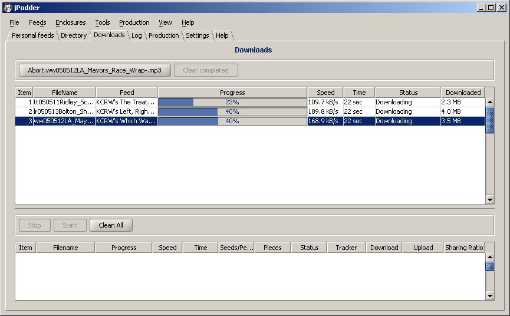
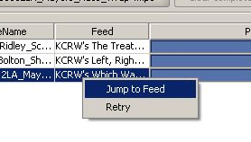

The main task of jPodder is to download the podcasts from the provider interactively or in the background. To give you a chance to see what jPodder did or is doing this view shows you state information about the past and current downloads.

The downloads view displays a table for the regular downloads (top) and a table for the downloads (bottom).
The top Table's columns are:
| 1. | Item | Index of the download |
| 2. | FileName | Name of the actual file |
| 3. | Feed | Name (Title) of the feed |
| 4. | Progress | The percentage of an ongoing download if the size of the file is available |
| 5. | Speed | The rate of the download |
| 6. | Time | The duration of the download so far |
| 7. | Status | The status of the download |
| 8. | Downloaded | The bytes already downloaded |
The top table has a context menu allowing you to jump directory to the feed providing the podcast or to retry the download 
The bottom Table's columns are:
| 1. | Item | Index of the download |
| 2. | FileName | Name of the actual file |
| 3. | Progress | The percentage of an ongoing download if the size of the file is available |
| 4. | Speed | The rate of the download |
| 5. | Time | The duration of the download so far |
| 6. | Seeds/Peer | The number of seeds (Seeds own a full copy of the file) and peers |
| 7. | Pieces | The number of already downloaded pieces of the file |
| 8. | Status | The status of the download |
| 9. | Tracker | The status of the tracker (A bittorent tracker coordinates a download) |
| 10. | Download | The number of bytes which have been downloaded |
| 11. | Upload | The number of bytes which have been uploaded |
| 12. | Sharing Ratio | The ratio of downloaded versus uploaded bytes |